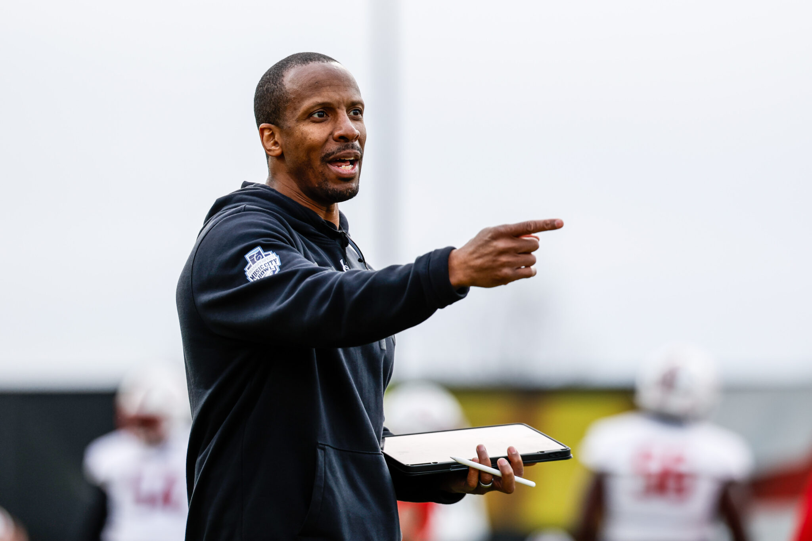
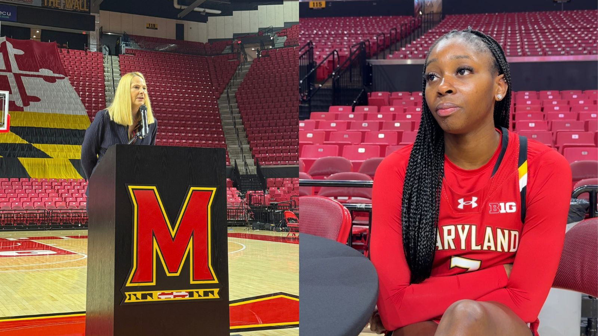
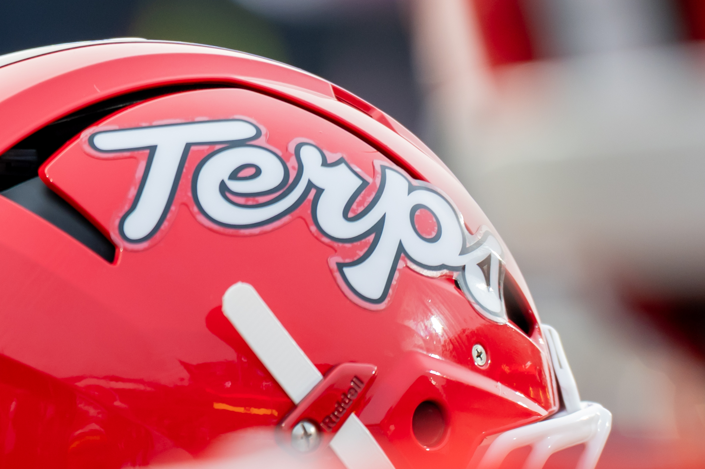
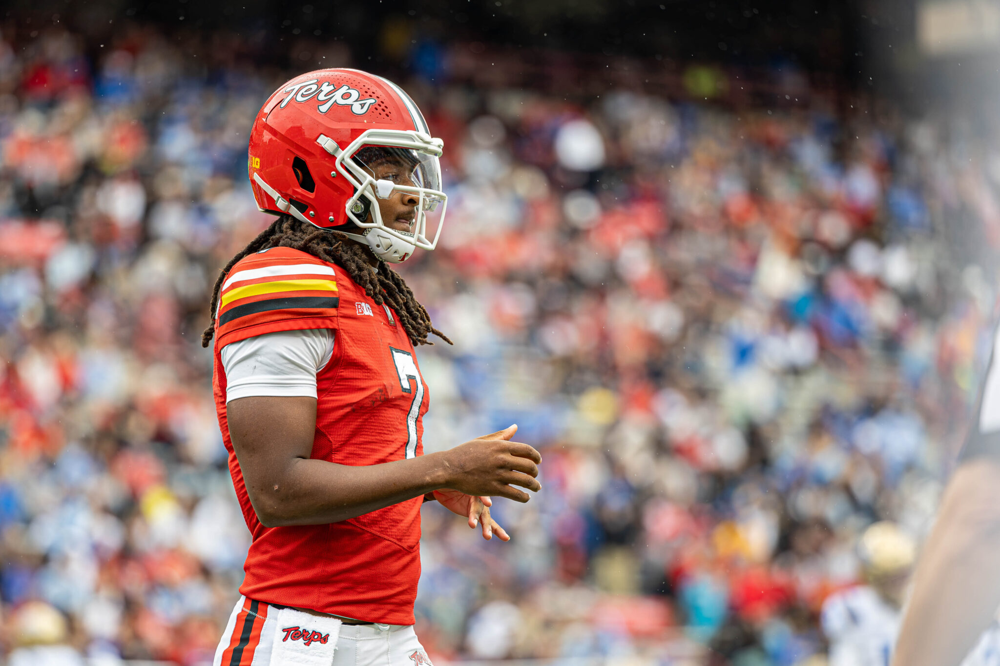
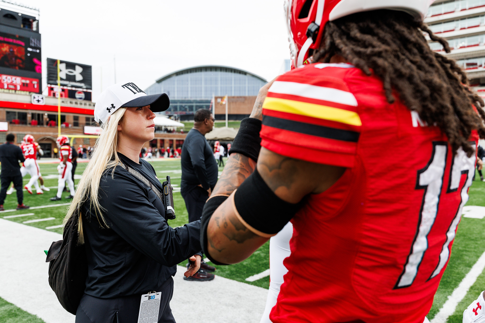

Faith Harris
Aspiring Sports Journalist
EXPERIENCE
ESPN
Production Assistant Intern | June 2026 - August 2026
- Edited a variety of VOs, SOTs, and highlights for daytime SportsCenter, SportsCenter @ Night, and NBA Today
- Pitched segment topics that made air, including one with analyst Emily Kaplan about potential NHL trade deadline moves
- Used free time to network with Senior print editors, where I shadowed multiple people and helped edit NFL stories for the ESPN website
The Diamondback
Sports Editor & Football Reporter | August 2024 - Present
- Publishing ~3 stories per week on Maryland athletics including features, investigative pieces, and game stories
- 90+ pieces between football, women’s basketball, softball, and the general assignment beat
- Providing daily coverage via written reporting, Twitter, and Instagram; breaking news in the crowded media market including exclusive signings, athletics ticket deals, and more.
- Promoted to Sports Editor in April 2026; managing a staff of 10 writers while editing weekly articles on tight deadlines
Capital News Service
D.C. Bureau Reporter | August 2026 - Present
- Reporting on Capitol twice a week for my capstone, covering stories from a Maryland lens
- Conducted a series including written articles and social video about the Protect College Sports Act, following the bill for weeks and interviewing lawmakers on their thoughts
- Other event coverage has included the Congressional Black Caucus' annual conference, covering press conferences from Minority House Leader Hakeem Jeffries, covering Senate hearings, and more
Education & Awards
University of Maryland: Philip Merrill College of Journalism | May 2028
- Journalism major, General Business minor | Expected Graduation in May 2028
- National Association of Black Journalist's ESPN-NSBJ Stuart Scott Scholarship recipient
- Washington Association of Black Journalist's Paul Brock Journalism Scholarship recipient
ABOUT ME

I am a junior journalism major and general business minor at the University of Maryland. I've been covering sports for four years, with experience in politics as well. I am looking for opportunities as a Sports Reporter or in an Editorial role!
My work

Aazar Abdul-Rahim will lead a reeling Maryland football team. His history says he's ready for it.
Athlete and her coach see Protect College Sports Act through "different lenses"
Maryland football's Josiah Teasley to face trial on charges of distributing sexual images
Maryland football's lack of depth asked everything of Malik Washington in loss to UCLA
Inside the science and routine behind Maryland football's strict nutrition regime